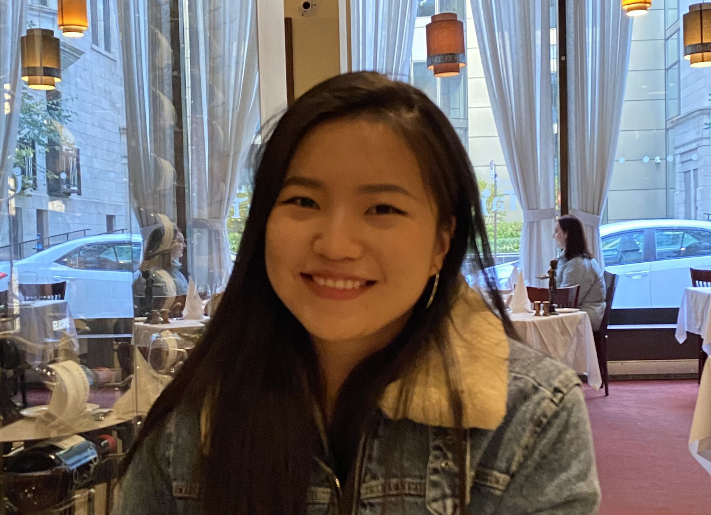

| Home | Resume | Projects | Contract | Social | Admin |
|---|---|---|---|---|---|
|

I believe that nothing in the world is difficult for one who sets his mind to it. I like challenges and will face challenges and solve them. In the future, I wish to develop valuabe or useful software for people.
About Myself
I am now in my second year of undergraduate computer science at Concordia University. So far,I have completed most of the major courses of my program and mastered programming languages like Java, C++ and so on. In addition, I have done many related projects. In the process of learning, I can always find myself having a high interest in programming. I get my work done efficiently and have good focus. Also, I am a person who pays attention to details, so I hope that every project I do can be perfect.I think I am a person who is able to bring value to the company.
|
|||||